/* alexey-yurenev - proofs */
11 plates. Deterministic overlays rendered by the composition-analysis skill.
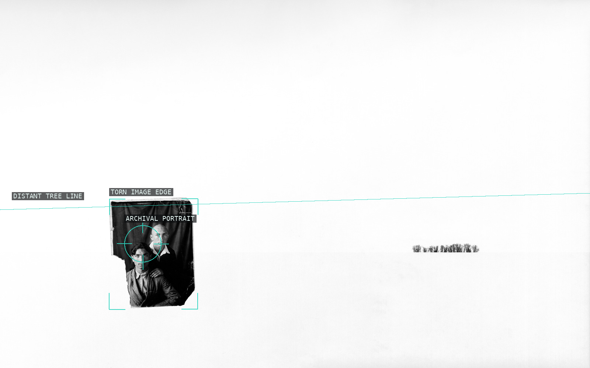
01-silent-hero-01
A fragile portrait occupies a small dark island below a vast white field.
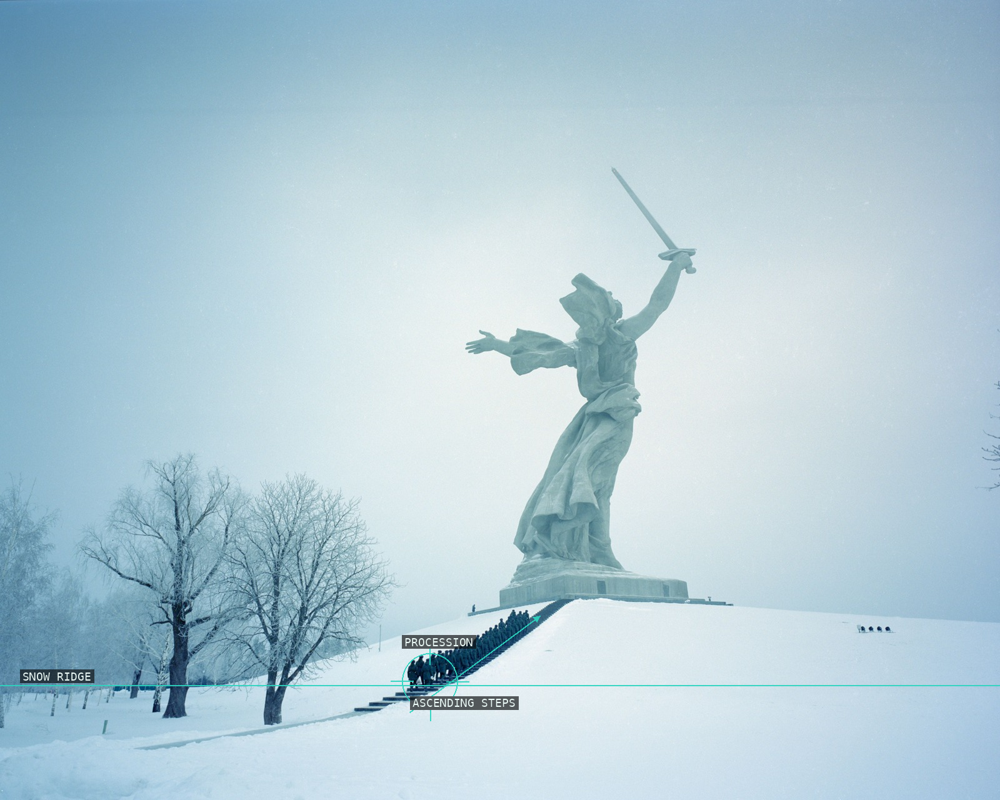
02-silent-hero-02
The small procession climbs toward the monument across a broad snow slope.
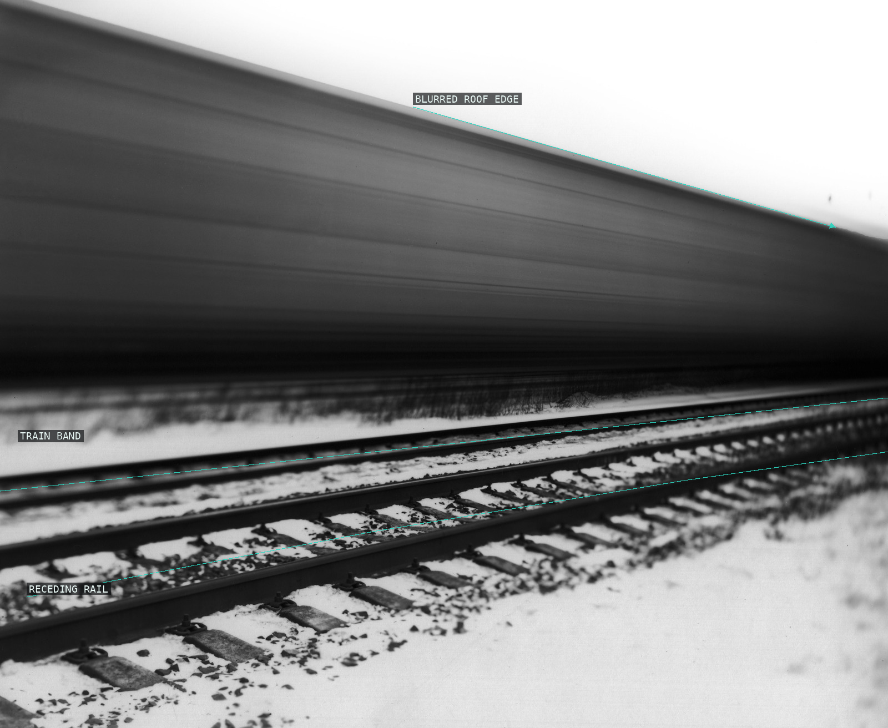
03-silent-hero-03
A speeding dark band crosses the rails, converting depth into motion blur.
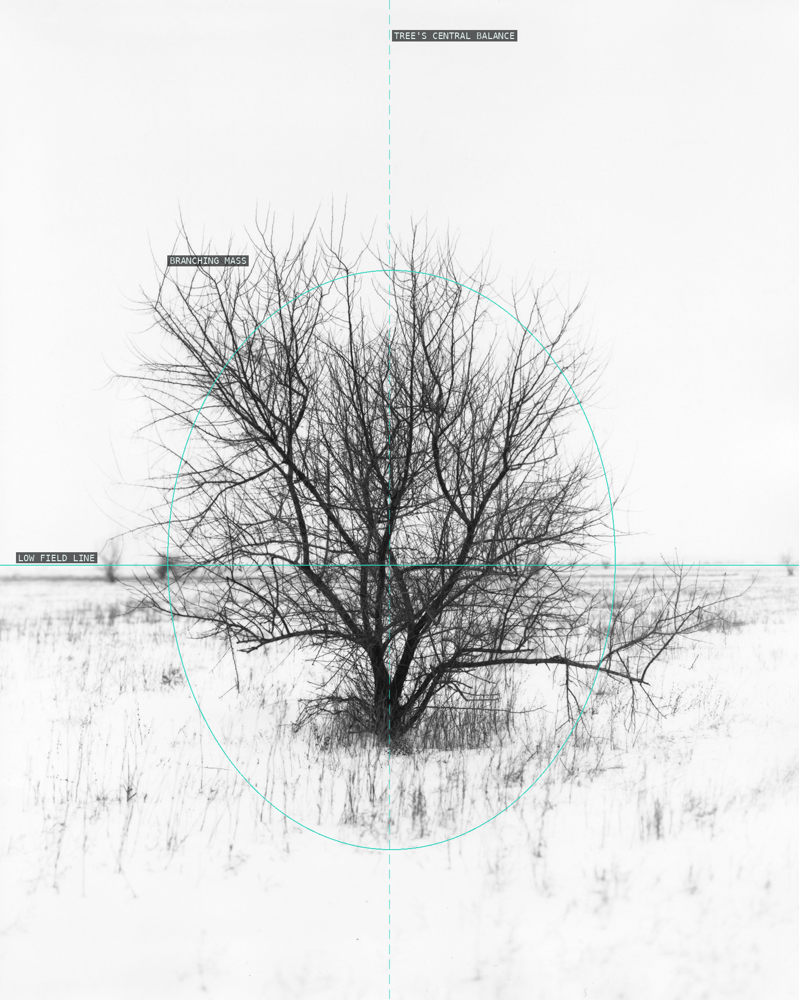
04-silent-hero-04
A nearly centered branching mass makes intricate line press against an empty field.
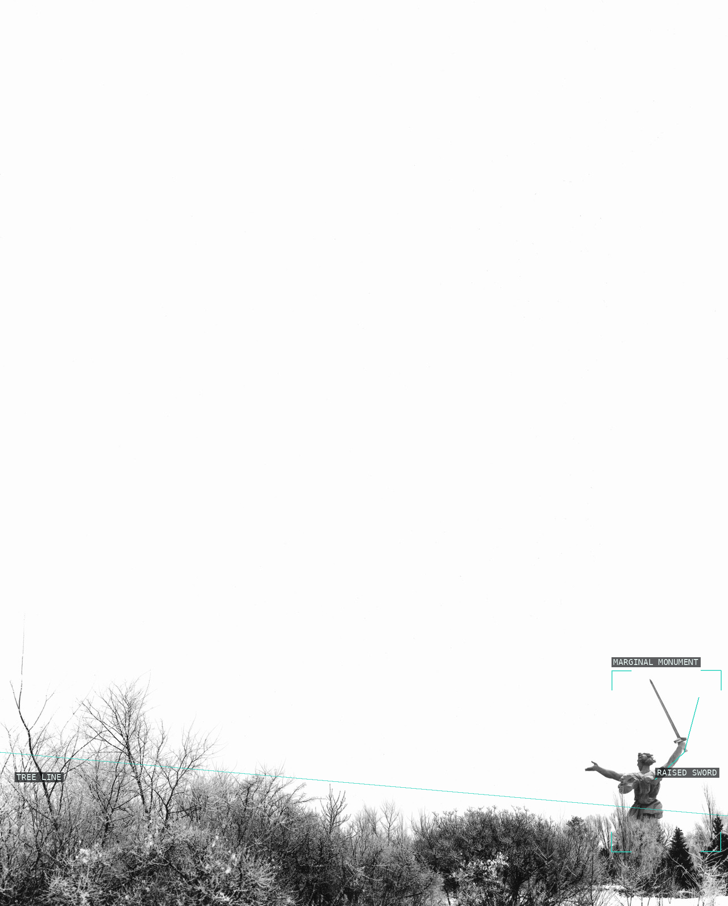
05-silent-hero-05
The monument is displaced to the edge, leaving the empty sky to carry the frame.
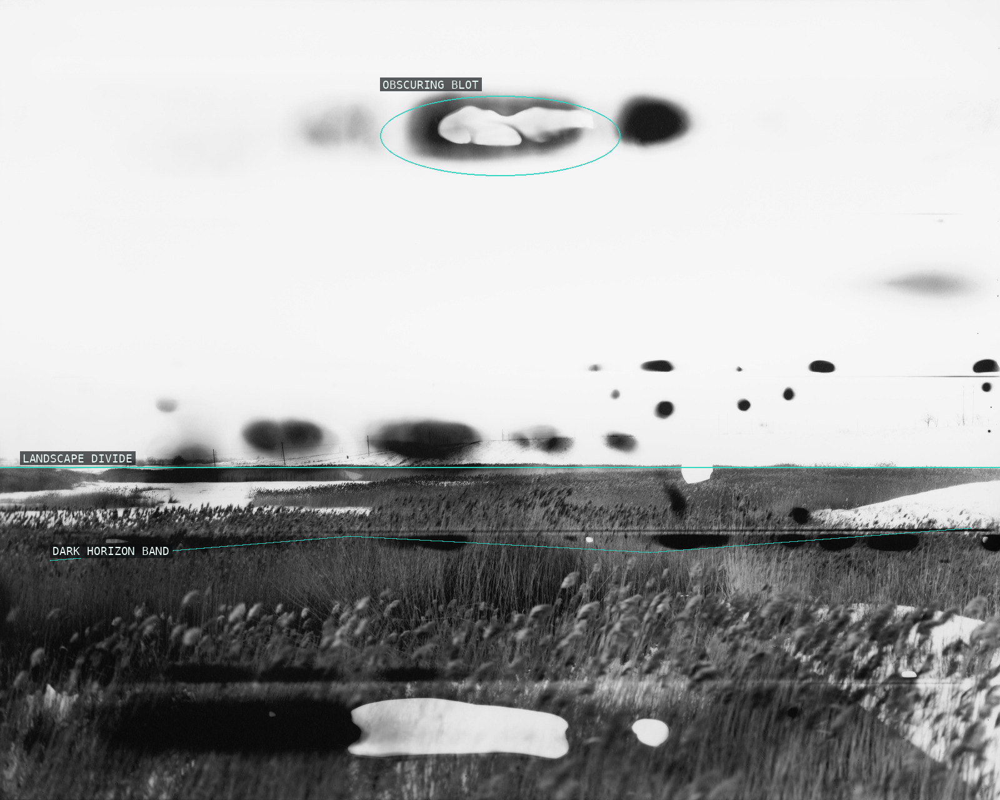
06-silent-hero-06
Blots and streaks interrupt a landscape whose low horizontal is still barely legible.
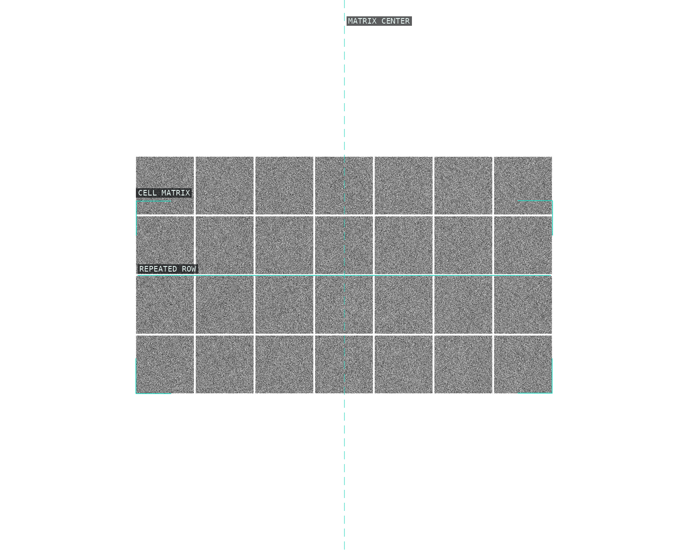
07-silent-hero-07
A bounded matrix recasts image information as repeated, granular cells.
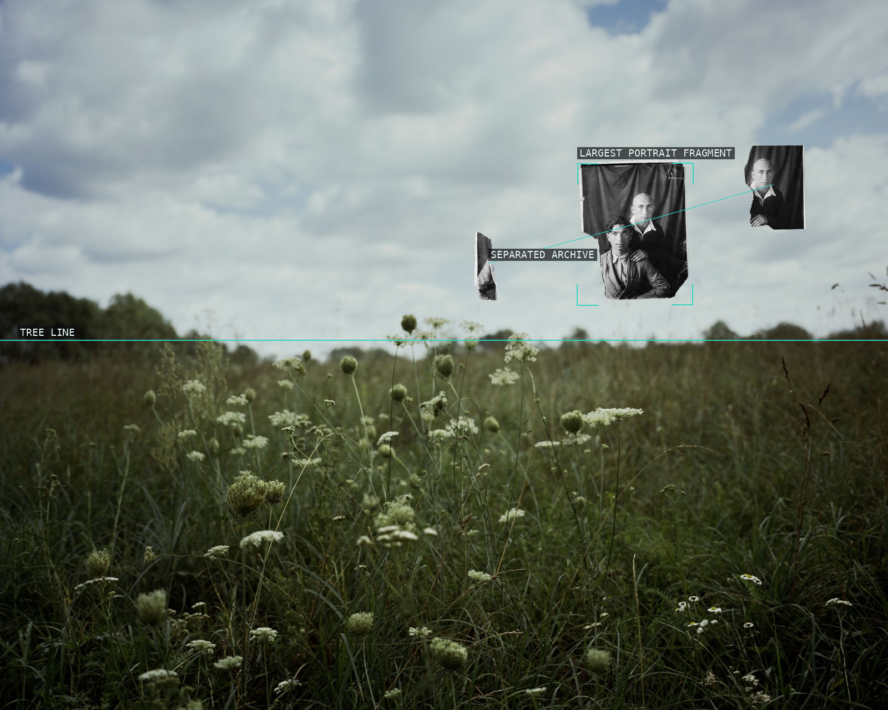
08-silent-hero-08
Portrait fragments hover above the meadow, with their separation becoming the subject.
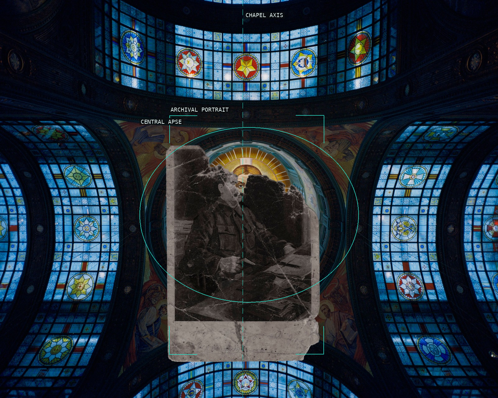
09-silent-hero-09
A damaged portrait interrupts an otherwise symmetrical blue stained-glass interior.
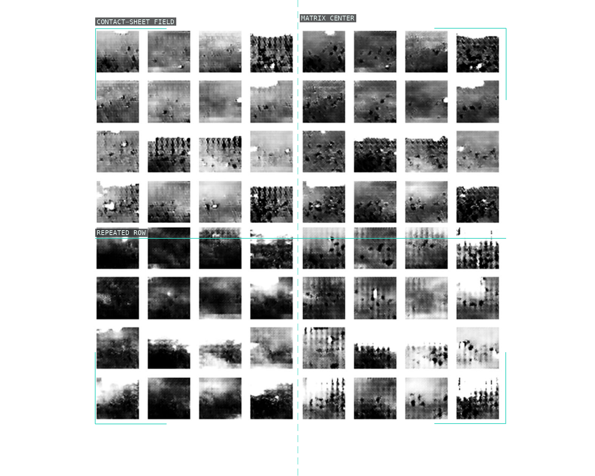
10-silent-hero-10
An ordered field of tiny frames shifts attention from one image to comparative sampling.
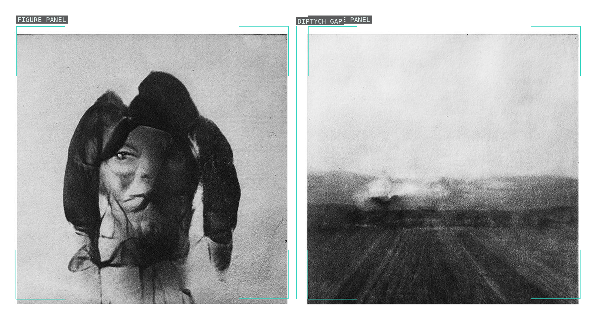
11-silent-hero-11
Two unequal scenes stay separate across a narrow gap: bodily burden at left, open terrain at right.